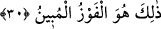

amelini isterler. Bu hazene denilen yazıcı melekler: “Arkadaşınız için size arzedecek
bir amel bulamıyoruz” derler. Hafaza melekleri dönüp adamın vefat etmiş olduğunu
görürler.
Sonra Abdullah b. Abbâs şöyle demiştir: Siz Arap değil misiniz? İstinsah ancak
asıldan yapılır. O asıl da Levh-i Mahfûzdur. Levh-i Mahfûz, “korunan levha” demektir
ki o değişikliklerden, değiştirilmekten, ziyade ve noksanlıklardan korunmuştur. Kalem-i
a’lâ yâni en yüce kalem ezelde ne yazdıysa o hâl üzere korunur. Bu kavl-i ilâhî de şuna
delâlet etmektedir ki, hafaza melekleri yâni yazıcı ve koruyucu melekler kulun gün
içinde yapacağı işleri yapmadan, bilmektedir. Şâyet “madem ki hafaza melekleri Levh-i
Mahfûzdan alarak kulun amellerini önceden biliyorsa o zaman kulu takip ederek kulun
amellerini yazmalarının faydası nedir dersen” ben de derim ki “kul için yaptığı işleri bir
huccet ve delil ile isbat etmek ancak meleklerin işin yapıldığı zamanda orada hazır
bulunmaları ve olduğu gibi o işi yazmalarıyla mümkün olur.”
Bazıları demiştir ki bu yazıcı ve koruyucu hafaza melekleri kuldan yazdıkları her şeyi
Ümmü’l-kitab/ana kitap olan Levh-i Mahfûz ile karşılaştırırlar. Yapılan işlerde sevap
yahut ceza gerektiren durumları saklayıp korurlar. Sevap yahut ceza gerektirmeyen
durumlar ise silinir. Allah Teâlâ şöyle buyuruyor: “Allah dilediğini siler, dilediğini
bırakır. Ana kitap onun yanındadır” (er-Ra’d, 13/39) Kul, ecel gelmeden hâlini
düzeltmeli, eksiklerini telâfî ve tedârik etmelidir. Zira ömür pek yakında bitecek, her
şey ters yüz olacaktır.
Şeyh Sa’dî şöyle demiştir:
Yazık, çirkin şeytanın emrini tutuyorsun,
Sonra o fena işi defterine melek yazacaktır.
Vicdânın râzı olur mu ki cehalet yüzünden yaptığın pis işleri
Temiz melekler yazsınlar.
Sen iyi bir yol tut ve barışı ara,
Bir şefaatçi edin ve özür dile.
Bunu çabuk yap, zamanın dönmesiyle peymânen dolduğu an,
Sana bir lahza aman verilmez.
Allah Teâlâ bizleri ve sizleri kendi hoşnutluk ve rızasına kavuşup O’nun emir ve
hidâyetini kabul edenlerden eylesin.
30. İnanıp iyi işler yapanlara gelince, Rableri onları rahmetine kabul eder. İşte